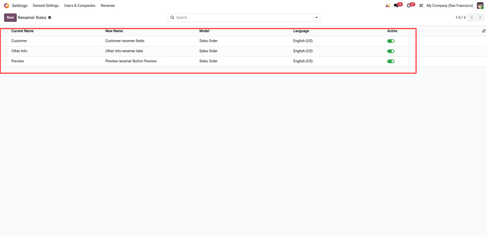
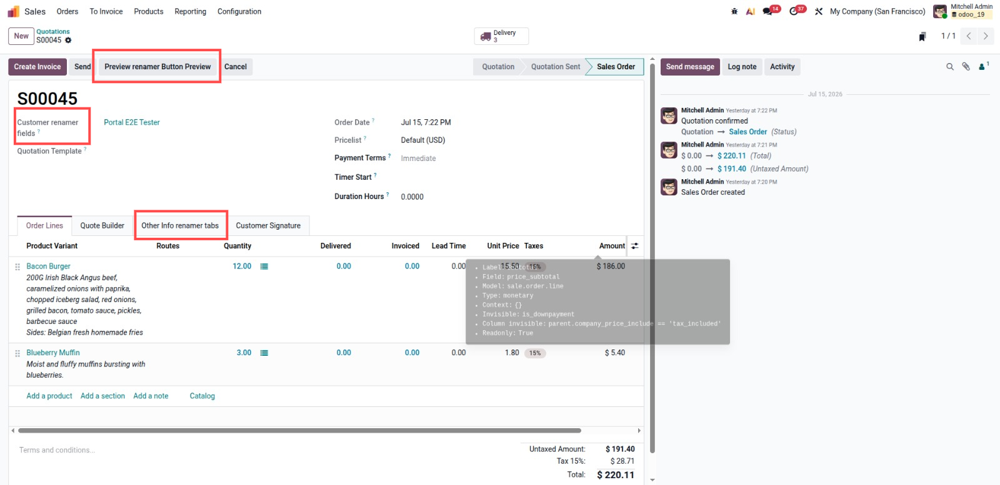

Rename form field labels, button texts and notebook tab titles from a simple configuration screen. No development, no view inheritance, no Studio.
Apply a rename everywhere in the database, or limit it to one specific model. Model specific rules always win over global rules.
Rename a label in one language without affecting the translations in other languages. Leave the language empty to apply the rule to every language.
Works with labels coming from standard Odoo apps and from any custom or third party module installed in the database.
Rules are applied on the fly when views are loaded. Original views, fields and translations are never modified, so uninstalling restores everything.
A dedicated Renamer Manager group controls who can create and modify rename rules. Administrators get access automatically.

Create rules from Settings, Renamer. The highlighted rows show three active Sales Order rules: Customer becomes Customer renamer fields, Other Info becomes Other Info renamer tabs, and Preview becomes Preview renamer Button Preview. Each rule can be limited by model and language.

After refreshing the browser, the highlighted Sales Order form shows the renamed field label, renamed button text and renamed notebook tab. The original technical fields and views stay untouched, so disabling or deleting the rule restores the standard labels.
1. Install the module and assign the Renamer Manager group to your user if needed.
2. Go to Settings, Renamer.
3. Create a rule: set Current Name to the exact existing text, for example Customer, Other Info or Preview.
4. Set New Name to the label users should see.
5. Optionally pick a model to limit the rule, or a language for language specific renaming.
6. Refresh the browser. The new labels are applied on fields, buttons and tabs.
7. Archive or delete a rule to restore the original labels.